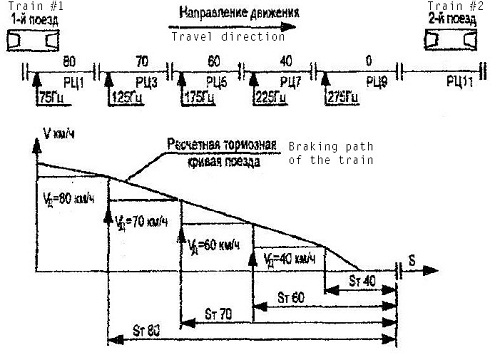
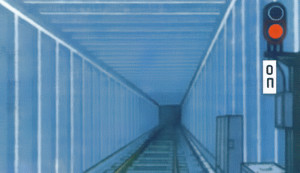

You are in control of a state-of-the-art subway train.
It features electric engines as well as pneumatic and electric braking systems. The electric circuitry is primarily based on mechanical relays.
Internally, the electrical systems are controlled by opening and closing contactors in order to reconfigure the train's circuitry.
For example, the motors can be connected in either series or parallel depending on the required speed.
In normal usage, there are few controls that the driver needs to use. These are:
The Controller
Control of the electric power circuits is mainly done through the controller - by setting the
controller to one of seven different modes, the motors can be disengaged or configured to run at
three different speeds, and the electric brakes can be set to the desired strength.
The Driver's Valve
The pneumatic braking system is controlled with the driver's valve.
It has five modes (default #334 type valve), which allow the brake cylinder to be filled or drained of air.
The subway trains use fail-safe westinghouse braking system (railway air brake).
The drivers valve is used to connect or disconnect brake line and train line. For proper
air braking, the valve is opened and closed until brake line pressure is at desired
value.
The Reverser
Trains cabin in every wagon, which can command direction in which train will move. The cabins at either
end of the train are called heads. A reverser in every wagon controls the direction of movement for entire train.
The reverser can be in three positions: forward, 0, and backward. If reverser
is in position 0 in a wagon, it will receive control commands from other wagons.
To control the movement of the train, there are four relevant modes on the controller: X1, X2, X3 and 0.
X1 is a low-powered mode which is used for maneuvering in a depot or through track switches.
X2 and X3 are the modes used for travelling between stations.
In X2/X3, the engines enter automatic mode and speed is automatically controlled - the counter-current generated by the engines will regulate the speed of the train.
In X2 mode, the train has a top speed of roughly 40-50 km/h, which drops to 20-22 km/h when climbing a slope due to automatic mode.
In X3 mode, the train's top speed is roughly 80-90 km/h, which decreases to 60 km/h on a slope.
0 disengages the engines and lets the train roll on the tracks.
Electric Brakes
The electric brakes are controlled by three controller modes: T1, T1A and T2.
The electric brakes will be engaged upon selecting any of these modes.
The brakes can be smoothly applied - switching from T1 to T1A adds an extra level of brake strength.
T2 mode will attempt to keep a constant braking force by automatically adding levels of brake strength,
which keeps the deceleration roughly constant throughout the entire braking.
When T2 is engaged, if the power circuits fail to assemble, pneumatic braking will be applied instead.
While manual brake may take some time to assemble (sbor), T2 brakes will become effective immediately to ensure safety of the train.
If ARS system is enabled, pneumatic braking will be enabled if T2 mode is ineffective (when train speed is below 15 km/h). After the train has stopped, driver should disengage the electric brakes.
Pneumatic brakes will remain active as commanded by ARS until driving mode is engaged.
Pneumatic Brakes
The pneumatic braking system is controlled by the driver's valve.
The pressure in the brake cylinders is controlled by the pressure difference between two lines -
the train line, which has a large reservoir and a compressor motor attached,
and the brake line, which can be filled from the train line
or released into the atmosphere as necessary to control the brakes.
When pneumatic braking is not used, the driver's valve is set to position 2.
This fills the brake line from the train line, which causes the two pressures to almost equalize, and so disengages the brakes.
Mode 4 releases the pressure from the brake line into the atmosphere which causes
the brake cylinders to fill from the train line, thus engaging the brakes.
In mode 3, all the valves are closed, which keeps the brake pressure as it is.
1 is similar to 2 and 5 is similar to 4,
except they take effect quicker, and the driver's valve must be held in that position.
Pneumatic brakes are applied in steps, which the driver controls by the pressure gauge. There are three
pneumatic braking steps (pressure is indicated by the red arrow on pressure gauges):
6.2-6.5 atm
Brakes fully released and supercharged
4.8-5.2 atm
Brakes fully released
4.3 atm
Step 1
4.0 atm
Step 2
3.7 atm
Step 3
3.0 atm
Full service brake
0.0 atm
Emergency brake
When the electric brakes reach position #18, the pneumatic brakes will be automatically activated by
turning on pneumatic valve #1 (which creates pressure in braking cylinders of 0.8-1.2 atm).
When using T2 mode, this typically happens at roughly 5-10 km/h. Pneumatic valve #1 can be triggered manually on the 81-717 train by pressing the PN#1 button.
If T2 mode fails to engage, pneumatic valve #2 is turned on (which creates pressure of 1.5-2.0 atm).
Reversing direction
Each wagon has a reverser, which sets the direction that the train moves in.
The reverser has three positions - forward, 0 and backward.
The wagon that you wish to control the train should have its reverser set to forward or backward, all others must be set to 0.
ARS/ALS
All train cabins are equipped with ALS/ARS system (automatic locomotive signalling/automatic speed regulation). This system aids drivers by preventing overspeeds, going through red lights, keeps pneumatic brakes active while standing on station to prevent train from rolling anywhere.
The ALS/ARS system must be always enabled. ALS provides the speed limit indications on cabin dashboard, while ARS executes the commands and has three key functions:
Disassemble driving mode of train (when train overspeeds for example)
Assemble braking mode T2 (if train overspeeds). This function can be cancelled by pressing the attention pedal (Space by default).
Engage pneumatic valve #1 (to keep train from rolling while standing still). This function is cancelled by moving controller to driving mode.
ARS/ALS system encodes several signals in the rail segment, defining movement speed in each segment. This information is displayed to driver as current speed limit. On some metro lines, ARS also encodes speed limit in the next segment (in this case, two lights will be lit up on the dashboard).
#1
75 Hz
80 km/h
#2
125 Hz
70 km/h
#3
175 Hz
60 km/h
#4
225 Hz
40 km/h
#5
275 Hz
0 km/h (prohibiting signal)
#6
325 Hz
Special/direction signal

ARS/ALS system operates in such way, so that if there's an obstacle ahead, the train would smoothly brake until full stop at the prohibiting ARS/ALS signal.
UPPS
UPPS is the station overrun protection signal. If UPPS is enabled, it will automatically turn on when train reverser is put into forward. UPPS signal will be emitted whenever train is entering the station.
UPPS can be enabled server-wide by using metrostroi_upps 1 server command.
Starting from the rear wagon of the train, and moving towards the head wagon of the train, in every wagon:
Turn battery on.
Ezh3: switch on the rear wall above instructors seat.
81-717: switch on the rear wall to the far right.
81-714/Ema508: switch at the wagon head underneath/near the gauges.
Verify circuit breaker positions. All circuit breakers must be turned on, except for:
Ezh3: A75 (cabin heating) is off
Leave train and get on the right side of it.
Walking from the front wagon to rear wagon, turn every master switch on (it is a red switch at the trains side, approximately in the middle of it by length. Simply press E on it).
Repeat when walking from the rear wagon to the first wagon - turning on master switches on both sides. Verify that red rear lights glow on every wagon equipped with them.
In the front driver's cabin, set the reverser to forward by pressing 0.
Ezh3: Push DIP on button (or press Shift+1).
81-717: Use BPSN switch to turn on BPSN (the switch is on leftmost top of the panel).
Turn on the motor-compressor and wait until sufficient pressure (6-8 atmospheres) builds up in the train line. Verify this by the black arrow on pneumatic pressure gauge.
Ezh3: Verify that only СД (SD), НР1 (NR1) lights are glowing on the main panel.
Open left doors (A). Doors must open.
Ezh3: СД (SD) light must stop glowing.
Open right doors (D). Doors must open.
Close doors (V). Doors must close.
Ezh3: СД (SD) light must stop glowing.
Turn on ALS, ARS switches (underneath and to right of the speed indicator).
Connect the driver's valve to pneumatic system by turning off the driver's valve disconnect valve (or pressing Shift+L).
Disengage the hydraulic brakes by pressing R until the driver's valve in position 2.
Wait for brake line pressure to reach its maximum value.
Press Space to cancel ARS emergency brake.
Leave the depot/holding dead end by starting motion of the train by moving the controller to position X1 by pressing 1.
The depot tracks do not have ARS/ALS signal. Until ARS/ALS signal is regained, hold attention pedal (Space) and do not exceed 20 km/h speed (recommended speed is 15 km/h).
Accelerating/driving:
Accelerate to target speed by engaging X1, X2 or X3 mode.
Disassemble the driving circuits once the target speed is reached. If speed limit is 60, controller can be left in X2 position as it will top out at 55 km/h.
If ARS speed limit is exceeded, the ARS system will brake below the speed limit. The driver must confirm his attention by pressing the attention pedal (Space key), otherwise the train will come to a full stop.
Changing cabins (previously FRONT head procedure):
Close the driver's valve disconnect value (Shift+L)
Move reverser to position 0 (press 9 once).
Ezh3: Signal to the driver in the other head about completing this procedure by pressing and holding DIP on button (Shift+1).
81-717: Signal to the driver in the other head about completing this procedure by using Ring button to give two beeps.
Changing cabins (previously REAR head procedure):
Wait until alarm is sounded by the driver in front cabin.
Signal to driver in other cabin about receiving control.
Open the driver's valve disconnect value (Shift+L)
Move reverser to position forward (press 0 once).
Leave the holding dead end by starting motion of the train by moving the controller to position X1 by pressing 1.
Braking to stop at station:
Always plan your braking ahead!
Engage electric brakes by moving the controller to position T1 by pressing 5.
Gradually increase the braking resistance by switching between T1A (6) and T1 (5) as the train slows down.
Control braking by the value of main ampermeter (efficient electric braking is when about 200-300 amperes are indicated).
When the train's speed is at roughly 15-20km/h, switch to T2 by pressing 7.
When the train's speed is at roughly 5-10km/h, the hydraulic brakes will automatically engage (via pneumatic valve #1).
Open doors for passengers.
If ARS is enabled, disengage the braking circuits few seconds after pneumatic valve #1 engages.
To avoid damage to the engines and discomfort of the passengers, the current through engines is limited.
The effective acceleration and braking of train is 1.2 m/s2.
Pneumatic braking (drivers valve 334):
Always plan your braking ahead!
Prepare the pneumatic brake by moving it into position 3 (press F once).
Open brake line for 1-3 seconds by pressing F to move to position 4.
Verify pressure drop by the red arrow on the pressure gauge. It must be no less than 0.2 atmospheres.
Close driver's valve by pressing R.
To release brakes, move driver's valve into position 2 by pressing R again.
In the subway, there are many signals and signs that you must recognise for safe and efficient operation.
Failure to respect them could result in delays and inconvenience for the passengers.
Ultimately, there are safeguard devices which prevent most serious accidents from happening for
all possible combination of failures.
Signalling
Track signals are used to regulate train traffic and ensure safety of all trains and their relative motion. Take time to memorize the signals and their meanings.
One red light: Stop! Driving through is prohibited.One yellow, one red light: Stop! Driving through is prohibited.

One red light, "ОП": Tracks and dead ends are terminated with one red light and a "ОП" (опасность/opasnost, danger) sign. Do not cross under any circumstances!
One flashing red light, "ДОП": "ДОП" (добавочный опасность/dobavochnyy opasnost) means "additional danger".
This indicates that there is a temporary change to the track configuration which should be treated as a dead end.
For example, if a track switch is in the wrong position as you approach a merging junction, as it would derail the train when passing over it.
One red light, one flashing white light: Train is invited to proceed through the red light, no faster than 20 km/h. Train must stop at the next obstacle. The dispatcher must be notified before train starts moving and after it passes the white light.One green light: Driving is permitted with the current speed limit.One yellow light: Driving is permitted, next signal is red. Proceed at reduced speed and expect to stop.One yellow, one green light: Driving is permitted with reduced speed, no faster than 60 km/h. Next yellow light must be crossed at no more than 35 km/h.One blue light: Driving is permitted according to ALS-ARS indications. If ALS indicator displays 0, ERR/NOS, or flashing ERR and 0 then the train is forbidden to cross it.One flashing yellow light, one yellow light: Driving to alternate track is permitted. Next signal is yellow or green.Two yellow lights: Driving to alternate track is permitted. Next signal is red.
The train electric circuits are divided into auxiliary circuits, power circuits and control circuits.
There are four electric engines, two engines in each bogie - with pairs connected in series (engines #1 and #3, engines #2 and #4) so both bogeys always produce power.
The two pairs of engines can be in turn connected in series or in parallel.
Each engine consists of an anchor (a rotor) and a stator.
All subway trains described in this manual use series excitation of engine.
This means that current flows through anchor, then flows through stator, as they are both connected in series.
Current through stator will create a magnetic field, in which the anchor will rotate.
The rotation of anchor generates current in opposite of current which accelerates it.
When current that flows through the engine equals counter-current generated by the engines, the train stops accelerating.
This is known as automatic mode.
During the initial start of the train, there is no magnetic field available and so no counter-current is generated.
If the engines would be connected in series to the 750 V power source, the total current flowing through them would be (750 V) / (4 * 0.0691 Ω) = 2710 A.
Such a current would destroy the engines.
To limit the current flowing through engines during startup a rheostat is used.
It adds additional resistance to the power circuits, limiting the current to 240-260 A for an empty train,
and up to 310-340 A on slopes and under load.
Acceleration of the train depends on current through the anchor.
Rotation rate is dependant on current through the stator (which is usually equal to current through the anchor).
Control System
When trains are coupled together mechanically, the electric ports located on the coupling are connected too.
Each of the pins creates a train wire, single conductor which is shared by all the wagons of the train.
Train wires are used to transmit control signals to all of the wagons of the train.
Pneumatic System
Pressure in brake cylinders is defined by difference of pressure between brake line and train line.
To increase pressure in brake cylinder, pressure from brake line must be released.
The pneumatic system is meant to be shared across all of the trains wagons.
This is controlled by the isolation valves.
These valves allow connection of brake line and train line through the coupling.
The isolation valves on both uncoupled ends of the train should be closed, while all the isolation valves between wagons should be all open.
Closed valves along the train will prevent operation of the pneumatic system across the entire train and will decreased braking efficiency.
Move controller to X1. Are red RP lights glowing? The circuits are failing to assemble.
Move controller to 0 position.
Are doors closed? Close doors. Make sure reverser is set to forward when doing this.
Is a single green RP light glowing? Press G to reset overload relay.
Check brake cylinder pressure. Are pneumatic brakes engaged? Press R a few times to move drivers valve to position 2, open drivers valve disconnect valve.
Is ARS system enabled? If it is not enabled, enable ARS and ALS switches. If unable to do so, hold Space (attention pedal) while driving.
Check brake line and train line pressure. Do you have enough pressure in both? Turn on motor-compressor.
Is reverser set to neutral in all wagons? Reset reverser to neutral position in all wagons.
Is battery turned on in all wagons? Check battery state in every wagon. It must be on in all trains.
Are all circuit breakers in right positions? Check that all circuit breakers are turned on.
Is АВУ/AVU light glowing? Make sure motor-compressor is turned on, there is enough pressure in train line and pneumatic brakes are released.
Are КТ/KT, КВД/KVD lights glowing? Cancel ARS emergency brake by pressing Space.
Do not lose hope and go to 'Advanced train failure troubleshooting' instruction.
Pneumatic brakes do not engage or do not release
Check all isolation valves.
Make sure isolation valves on train ends are closed.
Open isolation valves between trains. Make sure to open them on both ends of the coupling.
Electric brakes don't work or are not efficient
Use pneumatic brakes.
Set controller to 0. Try to assemble brake circuit by moving it to T1. Are red RP lights glowing? Execute steps in 'Train refuses to move (power circuits fail to assemble)' instruction.
Train feels sluggish or slow, cannot climb hills
Make an emergency stop and engage pneumatic brakes
Execute steps in 'Train refuses to move (power circuits fail to assemble)' instruction.
Check all wheels and bogies to make sure there is no derail
Navigating the trains and subway system is a lot easier when you know some key Russian vocabulary:
Ход
travel, motion, run.
Used to refer to the controller modes in which the engines are powered, X1-X3.
Тормоз
brake.
Refers to modes T1-T2.
Сбор
assembly.
This is the term for when the controller is moved from away from position 0 to either an X or T position.
When this happens, the circuit is assembled into a configuration to either power the engines or to brake with them.
Разбор
disassembly, dissection.
The opposite of sbor. This is when the controller is switched to position 0, and the train's circuits are disassembled.
The disassembly occurs in a specific order, which will cause the engines to gradually become less efficient.